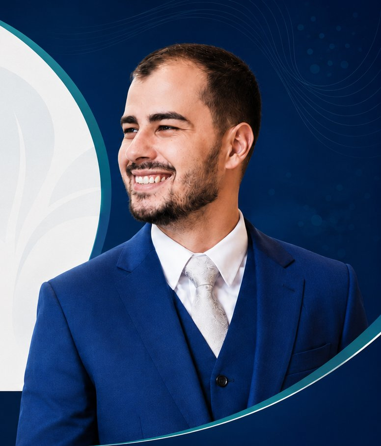

Emagrecimento com estratégia e acompanhamento
Avaliação clínica e orientação de rotina para apoiar mudanças consistentes, respeitando contexto, saúde e necessidades individuais.
Saúde integral • Emagrecimento • Performance física
Atendimento com foco em saúde integral, prevenção, composição corporal, hábitos sustentáveis e qualidade de vida.
Médico | CRM-SP 217814

O acompanhamento é conduzido de forma individualizada, considerando histórico clínico, rotina, objetivos, hábitos, composição corporal e fatores metabólicos. A proposta é orientar mudanças consistentes, seguras e sustentáveis, respeitando as necessidades de cada paciente.
Temas conduzidos com avaliação profissional, comunicação clara e planejamento individualizado, sempre sem promessas de resultado.
Avaliação clínica e orientação de rotina para apoiar mudanças consistentes, respeitando contexto, saúde e necessidades individuais.
Olhar para fatores metabólicos, hábitos, exames quando indicados e medidas de prevenção dentro de um plano de cuidado seguro.
Acompanhamento para compreender objetivos, rotina de treino, recuperação e composição corporal com abordagem clínica responsável.
Escuta, análise de histórico, identificação de prioridades e definição de condutas conforme a avaliação médica de cada paciente.
Orientação para construir hábitos sustentáveis, considerando sono, alimentação, movimento, rotina e adesão ao cuidado proposto.
Médico com atuação voltada ao cuidado integral, unindo raciocínio clínico, prevenção, acompanhamento individualizado e orientação para mudanças sustentáveis no estilo de vida.
O plano de cuidado é definido após escuta, análise do histórico e compreensão dos objetivos possíveis para cada pessoa.
Etapas pensadas para organizar a avaliação, alinhar expectativas e acompanhar a evolução com segurança.
Entendimento da queixa, do histórico de saúde, da rotina e das necessidades atuais.
Mapeamento de hábitos, contexto, composição corporal e fatores relevantes para a condução clínica.
Definição de orientações e condutas compatíveis com a avaliação médica e com a realidade do paciente.
Reavaliações e ajustes quando necessários, com foco em aderência, segurança e continuidade do cuidado.
As respostas abaixo têm caráter informativo e não substituem consulta médica.
A primeira consulta envolve escuta, avaliação do histórico clínico, rotina, objetivos e necessidades individuais. Condutas, exames ou prescrições dependem da avaliação profissional.
Não. O acompanhamento pode envolver saúde integral, prevenção, saúde metabólica, composição corporal, hábitos, qualidade de vida e performance física, conforme a demanda e a avaliação clínica.
Não necessariamente. Qualquer mudança ou integração com tratamentos em andamento deve ser discutida em consulta e pode envolver comunicação com outros profissionais quando apropriado.
Sim. O WhatsApp pode ser usado para solicitar informações administrativas e agendar consulta. Evite enviar dados sensíveis de saúde, exames ou informações clínicas pelo site.
Não. Este site é informativo e não realiza diagnóstico, prescrição ou atendimento médico. Diagnóstico, conduta e prescrição dependem de avaliação profissional individualizada.
Entre em contato pelos canais abaixo para informações administrativas e agendamento. Não envie sintomas, exames, diagnósticos, medicamentos ou dados sensíveis de saúde por este site.
Agendar pelo WhatsApp